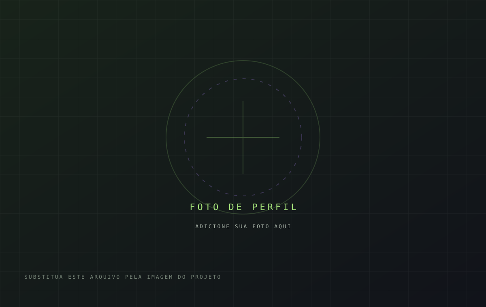
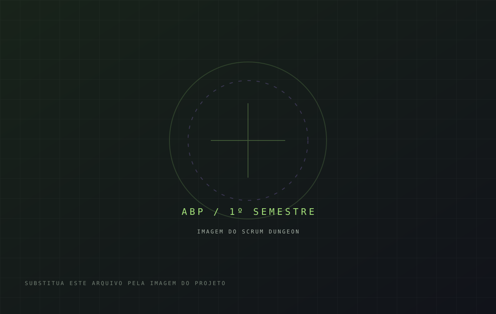
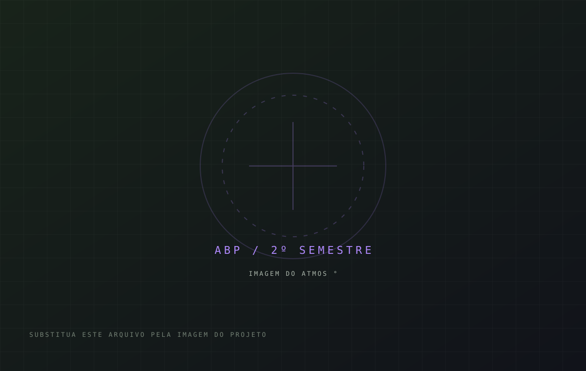

FORMAÇÃO TÉCNICA
Ensino Médio integrado à Informática
Instituto Federal de São Paulo — Campus Jacareí.
Informática · Programação · TecnologiaPORTFÓLIO • DESENVOLVIMENTO & TECNOLOGIA
Sou Lorenzo, estudante de Desenvolvimento de Software Multiplataforma. Gosto de transformar curiosidade em projetos — do código à experimentação com hardware.

01 / SOBRE MIM
A tecnologia me interessa principalmente pelo que ela permite criar.
Tenho interesse por desenvolvimento de software, interfaces, banco de dados e também por projetos que conectam o mundo digital ao físico. Gosto de aprender explorando, testar possibilidades e entender o funcionamento das ferramentas que utilizo.
Ao longo da minha formação, venho desenvolvendo projetos acadêmicos e pessoais que passam por aplicações web, eletrônica, programação embarcada e prototipagem.
Vamos conversar ↗02 / FORMAÇÃO
Conhecimento construído na sala de aula, nos projetos e na prática.
FORMAÇÃO TÉCNICA
Instituto Federal de São Paulo — Campus Jacareí.
Informática · Programação · TecnologiaGRADUAÇÃO
Faculdade de Tecnologia de São Paulo — FATEC Jacareí.
Desenvolvimento · Banco de dados · Métodos ágeisAPRENDIZADO CONTÍNUO
Aprendizado aplicado em projetos acadêmicos e pessoais, explorando diferentes tecnologias e áreas.
Prática · Pesquisa · Prototipagem03 / PORTFÓLIO
Uma seleção de experiências acadêmicas e pessoais. Os projetos acadêmicos têm espaço próprio para contexto, contribuição, tecnologias e repositório.

IMAGEM DO PROJETO / 01 01DSMPortal de aprendizagem gamificado sobre metodologias ágeis, que transforma conteúdos e avaliações em uma jornada com temática de RPG.
Plataforma web desenvolvida no contexto acadêmico para apoiar o aprendizado de Scrum por meio de capítulos, desafios e acompanhamento de progresso.
Participação no desenvolvimento da aplicação, estrutura das páginas e integração dos recursos de navegação e aprendizagem.

IMAGEM DO PROJETO / 02 2º SEM.Plataforma de monitoramento de serviços e visualização de indicadores de consumo energético e emissões de CO₂e.
Aplicação web que reúne dados de serviços monitorados e apresenta indicadores em painéis, ranking, comparação e visualizações geográficas.
Desenvolvimento da interface e das experiências de visualização, incluindo componentes de monitoramento, globo/mapa e telas de comparação e ranking.
Conceito de videogame portátil de baixo custo com Raspberry Pi e Arduino, interface própria e seleção de jogos.
REPOSITÓRIO ↗Plataforma experimental de jogos com matriz NeoPixel, Bluetooth, botões e sensor de movimento.
REPOSITÓRIO ↗Protótipo de controle de acesso com teclado matricial, display LCD, servo motor e sinalização RGB.
REPOSITÓRIO ↗Projeto web com foco em organização da informação, estrutura de conteúdo e experiência de navegação.
REPOSITÓRIO ↗Conceito de aplicação para apoiar a gestão de produtos, serviços e perfis de acesso de um pequeno ateliê.
REPOSITÓRIO ↗04 / FERRAMENTAS
Tecnologias e áreas que venho estudando e aplicando nos meus projetos.
Interfaces, componentes e experiências responsivas.
Regras de negócio, APIs e persistência de dados.
Programação embarcada, eletrônica e prototipagem.
Modelagem, documentação e organização de projetos.
05 / CONTATO
Estou aberto a trocar ideias, aprender com outras pessoas e conhecer novas oportunidades.